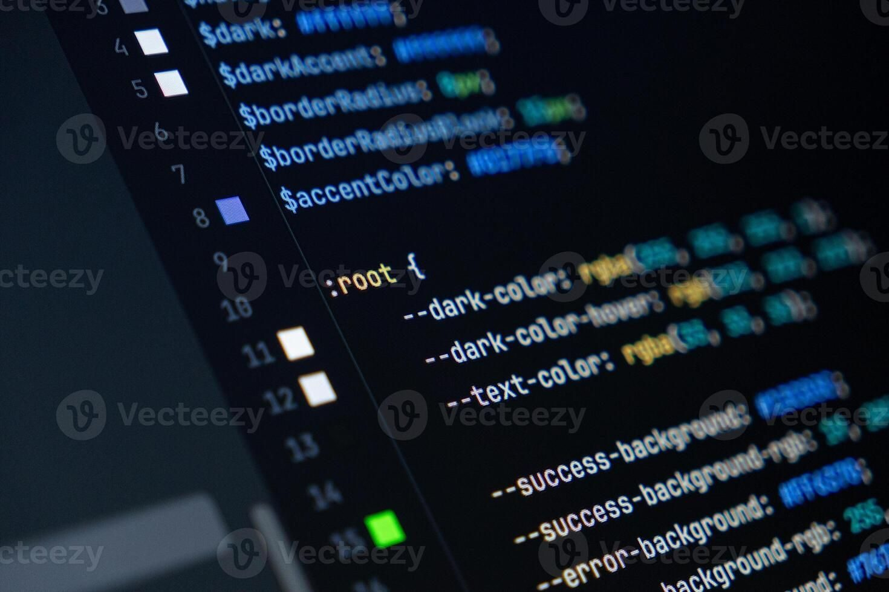
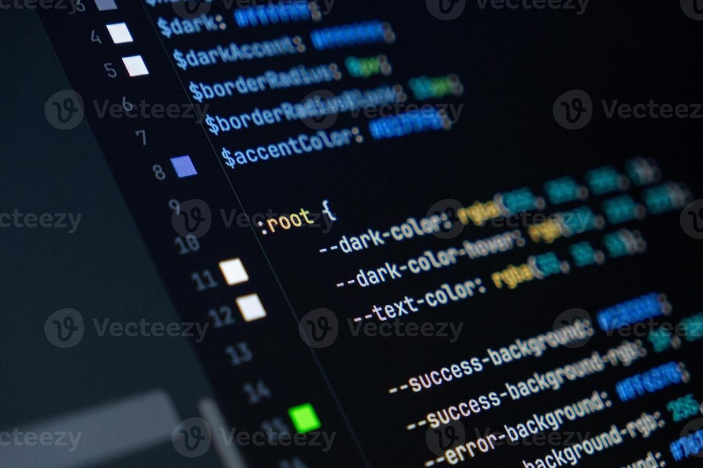

پرطرفدارترین
توسعه وب فرانتاند
از HTML و CSS تا React و معماری کامپوننتی — ساخت رابطهای مدرن و سریع.
- HTML/CSS
- JavaScript
- React
- TypeScript
مدت: ۶ ماهمشاهده مسیر
مسیرهای یادگیری ساختاریافته، منتورینگ فارسی و بازخورد کد واقعی — از اولین خط کد تا اولین پیشنهاد شغلی، همراهت هستیم.
const مسیر = [
"HTML & CSS",
"JavaScript",
"React + TypeScript",
"پروژه واقعی",
]
export async function شروع(کاربر) {
const منتور = await مسیر.منتورینگ(کاربر)
return منتور.رفتن_به_استخدام(کاربر) // 🚀
}دانشجوی فعال
دورهی تخصصی
مسیر یادگیری
رضایت دانشجویان
هر مسیر یک نقشهی راه کامل است؛ از مبانی تا پروژههای حرفهای و آمادهسازی برای بازار کار.

از HTML و CSS تا React و معماری کامپوننتی — ساخت رابطهای مدرن و سریع.
طراحی API، پایگاهداده و سیستمهای مقیاسپذیر روی سرورهای ابری.
مبانی یادگیری ماشین، کار با داده و ساخت اپلیکیشنهای هوشمند.
ساخت اپهای چندسکویی با تجربهی کاربری بومی و انتشار در استورها.
تمرکز ما روی مهارت عملی است، نه تماشای صرف ویدیو.
هر مفهوم را روی یک پروژهی واقعی پیاده میکنی، نه فقط تئوری.
جلسات هفتگی با منتورهای شاغل در شرکتهای بزرگ ایران.
بازبینی رزومه، تمرین مصاحبه و معرفی به شرکتهای همکار.
کدت توسط مهندسان باتجربه بررسی و بهینه میشود.
برنامهی یادگیری بر اساس سطح و هدف شغلی تو تنظیم میشود.
در پایان هر مسیر، گواهی قابلاشتراک در لینکدین دریافت میکنی.

«ساختار پروژهمحور باعث شد بعد از ۷ ماه اولین پیشنهاد کاریام را بگیرم. بازخورد کد واقعاً سطحم را بالا برد.»
«منتورینگ هفتگی نقطهی قوت اینجاست. وقتی روی معماری گیر میکردم، سریع راه درست را نشانم میدادند.»
«از صفر شروع کردم و الان روی مدلهای توصیهگر کار میکنم. مسیر یادگیری کاملاً شفاف و بدون سردرگمی بود.»
اگر پاسخ سوالت را پیدا نکردی، تیم پشتیبانی ما هر روز هفته در دسترس است.
نه. مسیرهای مقدماتی از پایه شروع میشوند و تنها به یک لپتاپ و چند ساعت در هفته نیاز داری.
درسها آفلاین و همیشه در دسترساند، اما جلسات منتورینگ و رفع اشکال بهصورت زنده و هفتگی برگزار میشود.
بله. با تکمیل پروژههای مسیر، گواهی اختصاصی با لینک قابلاشتراک برایت صادر میشود.
بله، برای مسیرهای حرفهای امکان پرداخت در سه قسط بدون بهره فراهم است.
تا ۱۴ روز پس از ثبتنام، بدون هیچ سؤالی تمام مبلغ به تو بازگردانده میشود.
ثبتنام رایگان است و تا ۱۴ روز بدون هیچ سؤالی قابل بازگشت. فقط ایمیلت را وارد کن.
تاکنون ۱۲۴۸۱ نفر ثبتنام کردهاند